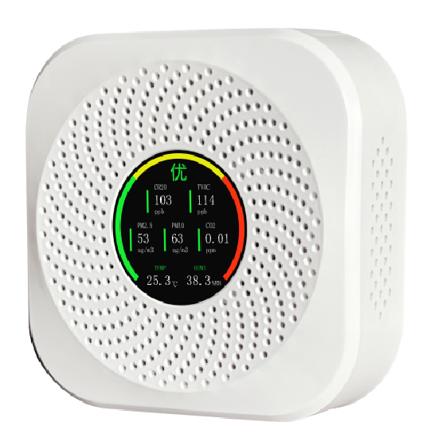

WW-RS18 多合一环境监测终端
空气温湿度、PM2.5、PM10、CO2、TVOC、甲醛多参数监测，RS485 输出，标准 Modbus-RTU 协议，小方吸顶彩屏款。
1产品概述
WW-RS18 多合一环境监测终端可用于监测室内空气质量状况，具备测量精度高、响应速度快、运行稳定等特点。设备作为现场采集从站，按标准 MODBUS-RTU 通信协议以 RS485 信号输出，能兼容组态王等多种上位机组态软件，可广泛用于办公楼宇、工业园区、智慧校园、智能家居等物联网监测领域。
本终端可监测温度、相对湿度、PM2.5、PM10、甲醛、TVOC、CO2 共 7 项参数，采用小方吸顶式安装，正面为彩色显示屏，实时显示各项参数与状态色条。
状态指示逻辑
PM2.5、PM10、甲醛、TVOC、CO2 五项污染物采用参数前方长柱形色条进行状态指示；温度、湿度采用数字字体颜色进行状态指示，判色逻辑如下：
| 类型 | 条件 | 显示 |
|---|---|---|
| PM2.5 / PM10 / 甲醛 / TVOC / CO2（柱形条） | 检测值低于阈值下限 | 绿色 |
| 检测值高于下限且低于上限 | 黄色 | |
| 检测值高于阈值上限 | 红色 | |
| 温度 / 相对湿度（字体变色） | 检测值高于下限且低于上限 | 绿色 |
| 检测值低于下限或高于上限 | 黄色 |
2主要技术指标
| 项目 | 参数值 |
|---|---|
| 直流供电 | DC 9~24V |
| 工作环境 | -20~55℃，10~95%RH |
| 存储环境 | 常规环境 0~35℃，15%~90%RH；要求无硅胶、酒精等污染气体长期存在 |
| 输出信号 | RS485 输出，Modbus-RTU 协议 |
2.1 测量范围与精度
| 参数 | 测量范围 | 测量精度 |
|---|---|---|
| 空气温度 | -40~80℃ | ±0.5℃ |
| 空气湿度 | 0~100%RH | ±3%RH |
| PM2.5 | 0~1000 μg/m³ | ±10%（@100~500 μg/m³）；±10 μg/m³（@0~100 μg/m³） |
| CO2 | 0~5000 PPM | ±5% |
| TVOC | 0~2 mg/m³ | ±15% |
| 甲醛 | 0~2 mg/m³ | ±4% |
3安装与调试
3.1 外形尺寸
外形尺寸 100mm × 100mm × 35mm（小方吸顶款，含底板）。

正面彩色显示屏实时显示各项参数与状态色条，外壳为白色小方吸顶造型。
3.2 安装方法
- 固定底板：使用自攻丝将底板固定在墙上（吸顶安装时固定于吊顶面）。
- 固定传感器：传感器背面的三个孔对应底板三个挂钩，顺时针旋转至传感器牢固即可。
3.3 端子说明
端子定义参照设备铭牌，标准定义如下：
| 位置 | 定义 |
|---|---|
| 左上 | RS485-B |
| 左下 | RS485-A |
| 右上 | 电源地 |
| 右下 | DC 9-24V 电源+ |
3.4 地址设置
出厂时地址已设置好（详见产品铭牌）。如需修改：设备左侧拨码开关（丝印 P10）为地址拨码，用户需在 001~255 内选择从站地址，设定好后断电重启生效。
拨码开关每位代表一个数值，拨到「ON」为有效值，拨到相反方向为无效值，地址为所有有效值相加。例：地址 100，则第 3、6、7 位拨到 ON，即 4+32+64=100。
4查看数据
- 用 USB 转 485 线连接电脑。
- 打开 Modbus Poll 软件，按设备串口参数完成基础配置（端口、波特率 9600、数据位 8、无校验、停止位 1），点击 OK。
- 配置读取的环境参数：传感器地址按背面铭牌，寄存器个数按需求设置，点击 OK 即可正常通讯。
- 如需查看下发与返回指令，在软件中开启通信报文显示即可。
- 修改波特率：写寄存器 14（0x000E），在 Value 框内输入波特率对应数字后发送。
- 修改地址：写寄存器 15（0x000F），在 Value 框内输入地址后发送。
- 修改阈值：寄存器 18（0x0012）写入参数 ID，寄存器 19（0x0013）写入阈值上限，寄存器 20（0x0014）写入阈值下限。输入阈值 = 实际阈值 × 采样值。
- 校准数值：寄存器 18（0x0012）写入要校准的参数 ID，寄存器 21（0x0015）写入微调值。输入值 = 实际值 × 采样值。
4.1 波特率对应值
| 数值 | 波特率 | 数值 | 波特率 |
|---|---|---|---|
| 0 | 2400 | 5 | 38400 |
| 1 | 4800 | 6 | 56000 |
| 2 | 9600 | 7 | 57600 |
| 3 | 14400 | 8 | 115200 |
| 4 | 19200 | 9 | 128000 |
4.2 参数 ID 对照表
| ID | 对应参数 |
|---|---|
| 0 | 温度 |
| 1 | 湿度 |
| 2 | PM2.5 |
| 3 | PM10 |
| 4 | TVOC |
| 5 | CO2 |
| 9 | 甲醛 |
4.3 指令修改示例
将地址 1 修改为地址 5（写入成功后设备返回一条相同数据即为写入成功）：
校准示例：温度需增加 2℃，则在寄存器 18 输入温度 ID（0）并发送，再在寄存器 21 输入微调值 20（2 × 采样值 10）并发送。
5通讯协议
| 项目 | 参数值 |
|---|---|
| 输出方式 | RS485 |
| 通讯协议 | MODBUS-RTU |
| 波特率 | 9600（默认） |
| 数据位 | 8 位 |
| 校验位 | NONE |
| 停止位 | 1 位 |
| 广播地址 | 0 |
| 出厂默认数据格式 | 1 位起始位、8 位数据位、1 位停止位、无校验、9600bps |
5.1 协议规约
| 字段 | 地址码 | 功能码 | 数据 | 校验低位 | 校验高位 |
|---|---|---|---|---|---|
| 字节 | 1 | 1 | n | 1 | 1 |
| 说明 | 1~255 | 03 读保持寄存器 / 04 读输入寄存器 / 06 写单个保持寄存器 | 数据 | CRC 低 | CRC 高 |
5.2 寄存器地址表
| 寄存器地址 | 参数 | 单位 | 量程 | 采样值 | 操作 |
|---|---|---|---|---|---|
| 0000H | 空气温度 | ℃ | -40~80 | /10 | 只读 |
| 0001H | 空气湿度 | %RH | 0~100 | /10 | 只读 |
| 0002H | PM2.5 | μg/m³ | 0~1000 | /1 | 只读 |
| 0003H | PM10 | μg/m³ | 0~1000 | /1 | 只读 |
| 0004H | TVOC | mg/m³ | 0~2 | /1000 | 只读 |
| 0005H | CO2 | PPM | 0~5000 | /1 | 只读 |
| 0009H | 甲醛 | mg/m³ | 0~2 | /1000 | 只读 |
| 000EH | 波特率 | — | 见 4.1 | — | 读写 |
| 000FH | 设备地址 | — | 1~255 | — | 读写 |
| 0012H | 参数 ID | — | 见 4.2 | — | 读写 |
| 0013H | 阈值上限 | — | 实际阈值 × 采样值 | — | 读写 |
| 0014H | 阈值下限 | — | 实际阈值 × 采样值 | — | 读写 |
| 0015H | 校准数值 | — | 实际值 × 采样值 | — | 读写 |
5.3 协议示例与解析
6注意事项
- 传感器避免接触有机溶剂（包括硅胶及其它胶粘剂）、涂料、药剂、油类及高浓度气体。
- 传感器探头不可用树脂材料完全封装，也不可浸没在无氧环境中，否则会损坏传感器性能。
- 传感器不能长时间应用于含有腐蚀性气体的环境中，腐蚀性气体会损害传感器。
- 传感器不可经受过度的撞击或震动。
- 传感器电缆接线时注意不要接错，否则可能烧毁内部元件。
- RS485 接线不要带电插拔，否则可能损伤 485 通讯芯片；请尽量选用信号专用电缆以提高传输距离。
- RS485 站地址不得与其它从站地址重复；从站最多不超过 31 个，否则需另加 RS485 总线桥（中继），且与主站的协议、波特率等数据格式必须一致。
- 如需修改波特率或数据格式，请订货时提前通知。
- Modbus Poll 安装包、使用说明、485 现场接线手册及完整通信协议格式可联系我公司提供。
- 传感器标配不含通信电缆与直流电源，需另行购买。
7常见问题及解决办法
设备无法连接到电脑或 PLC 的可能原因：
| 可能原因 | 处理办法 |
|---|---|
| 电脑有多个 COM 口，选择的串口不正确 | 在设备管理器中确认正确的端口号 |
| 设备地址错误或存在重复地址 | 检查传感器地址设置，必要时用万用表测量拨码开关状态 |
| 波特率、校验方式、数据位、停止位错误 | 核对串口参数与设备一致 |
| 主机轮询间隔和等待应答时间太短 | 建议设置在 1000ms 以上 |
| 485 总线断开，或 A、B 线接反 | 检查接线，A/B 互换重试 |
| 设备数量过多或布线太长 | 就近供电，增加 485 增强器，并增加 120Ω 终端电阻 |
| USB 转 485 驱动未安装或损坏 | 重新安装驱动 |
| 设备损坏 | 联系售后处理 |
8售后与质保
本公司产品自出厂之日起 1 年内由于产品质量问题免费维修；不可抗拒因素或人为损坏、使用不当则不在保修范围内。本产品长期维护。
秉承科技进步原则，致力于技术创新理念。我公司保留任何产品改进而不预先通知的权利，产品结构、参数可能与本手册略有出入，请以实际购买物为准。